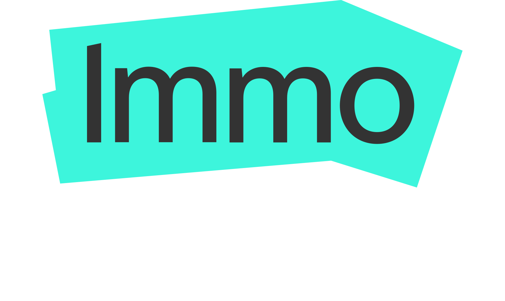
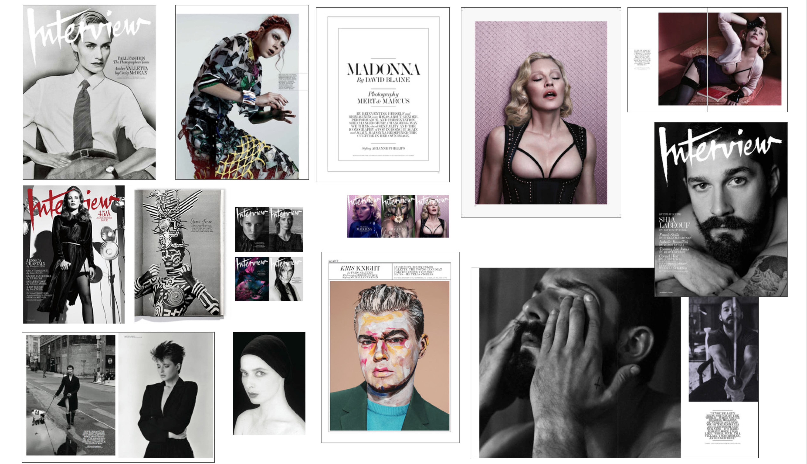

Hey, I'm Eve Creative Leader · Brand Systems · AI-Enabled Creativity I believe the strongest creative work emerges when great ideas, strong teams and meaningful stories come together.
Selected Case Studies
A selection of case studies offering a concise insight into different areas of work I have led and shaped in recent years. For further examples, please get in touch directly.

Brand Refresh
ImmoScout24
Leading the brand refresh and design system transformation of ImmoScout24 to unify product, marketing, and brand experience at scale.

In-House Campaign Engine
ImmoScout24
Building a scalable in-house production model - from pitch to final asset - reducing agency dependency while raising creative quality and speed.


Calvin Klein Global
New York
How I helped Calvin Klein reclaim culture through integrated creative content, social-first storytelling, and the global #MyCalvins initiative.

Culture, Fashion & Global Campaigns
New York · Berlin
Years of creative work across fashion, luxury and culture - from Interview Magazine to Hennessy, Karl Lagerfeld, Dior and LVMH.
Campaign delivery
AI service model
AI-Enabled Creative Studio
Service model · Agent workflows · Brand governance
AI-Enabled Creative Studio
Creative Studio · Marketing Unit
Evolving the Creative Studio from campaign delivery toward a scalable service model for AI-enabled workflows, brand quality, and internal enablement.


About me
AI for Leaders
Program Graduate
I’m a creative leader working at the intersection of brand, design and culture.
Today I lead the in-house creative team at ImmoScout24, where I help shape how one of Germany’s most recognized digital brands expresses itself across campaigns, products and storytelling.
What motivates me most about my work is building environments where creativity can truly happen. I care deeply about bringing people together, developing designers, and creating teams that trust each other enough to do their best work - even in fast-moving and sometimes demanding environments.
Over the years I’ve learned that strong creative outcomes rarely come from individuals alone. They emerge when people with different perspectives feel supported, challenged and inspired to push ideas further together.
Before returning to Berlin, I spent several years in New York City working for boutique agencies and with global fashion and culture brands including Calvin Klein, Baron & Baron and Interview Magazine. Those experiences shaped how I think about creative work today - not just as design, but as a way to connect culture, storytelling and brand identity.
In my current role I focus on building scalable brand systems, mentoring designers and exploring how emerging technologies like AI can support creative work without losing the human perspective that makes brands meaningful.
Beyond my professional work, I’m inspired by culture, creativity, personal growth and creating spaces where people can connect, reflect and grow together.